소속 및 경력
- 2022–현재 조이캄 대표
- 2023–현재 한스코칭 파트너 명상코치
- 2015–2021 아주대학교 건강명상연구센터 연구원
Mindfulness · Compassion · Leadership
조이캄은 마음챙김과 컴패션 훈련을 통해 개인과 조직이 자신의 내적 상태를 알아차리고 조율하며, 더 명료하게 관계하고 가치에 따라 행동하도록 돕습니다.
명상교육, 명상코칭과 마음챙김 리더십 프로그램을 통해 내면의 성찰이 삶과 일의 실제 변화로 이어지도록 지원합니다.
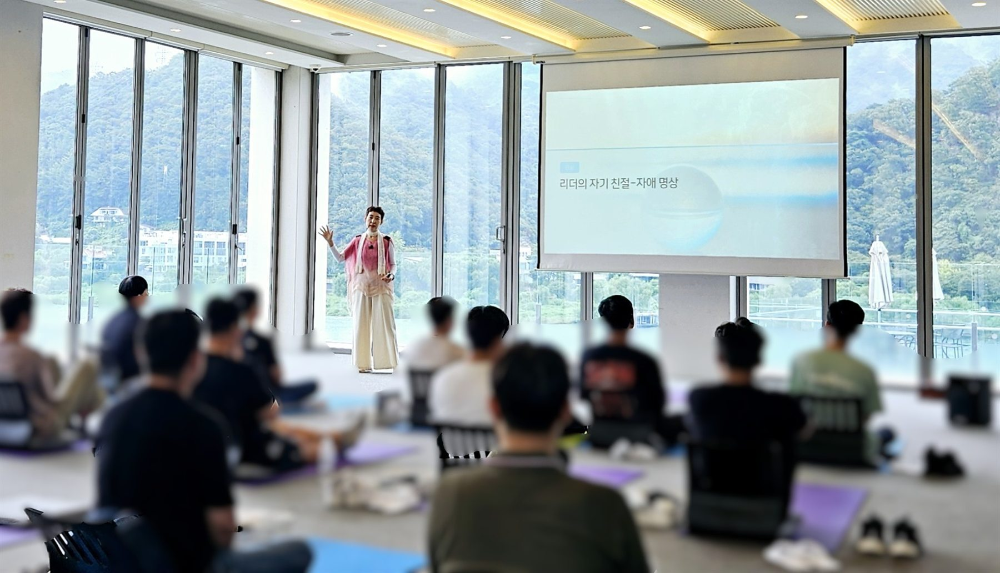
Who we work with
압박과 불확실성 속에서 자신을 잃지 않아야 하는 사람들, 그리고 그들이 속한 조직을 위한 훈련입니다.
Partners
기업과 공공기관, 병원과 학교 현장에서 마음챙김·컴패션 프로그램을 함께 만들어왔습니다.
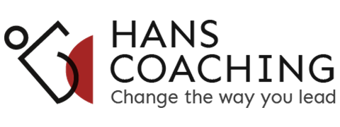
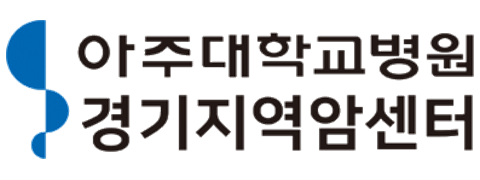
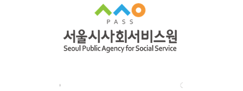
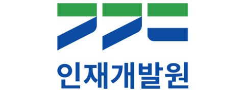
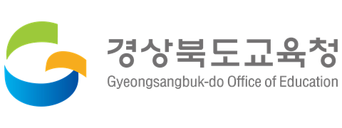
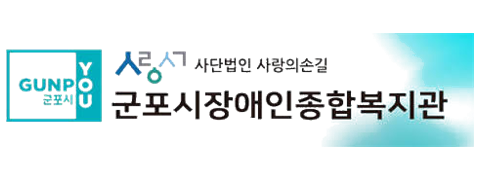
Founder

Mindfulness Leadership Educator · Meditation Coach · Founder, JoyCalm
마음챙김과 컴패션을 기반으로 개인과 조직의 내면역량을 개발합니다. 기업 리더와 임직원, 의료·돌봄 종사자, 교사와 학부모, 상담자와 코치를 대상으로 명상교육, 명상코칭, 마음챙김 리더십 프로그램을 기획하고 운영합니다.
특히 명상을 단순한 휴식이 아니라, 자신의 상태를 알아차리고 더 나은 관계와 행동을 선택하도록 돕는 ‘내 안의 성찰파트너를 키우는 훈련’으로 확장하고 있습니다.
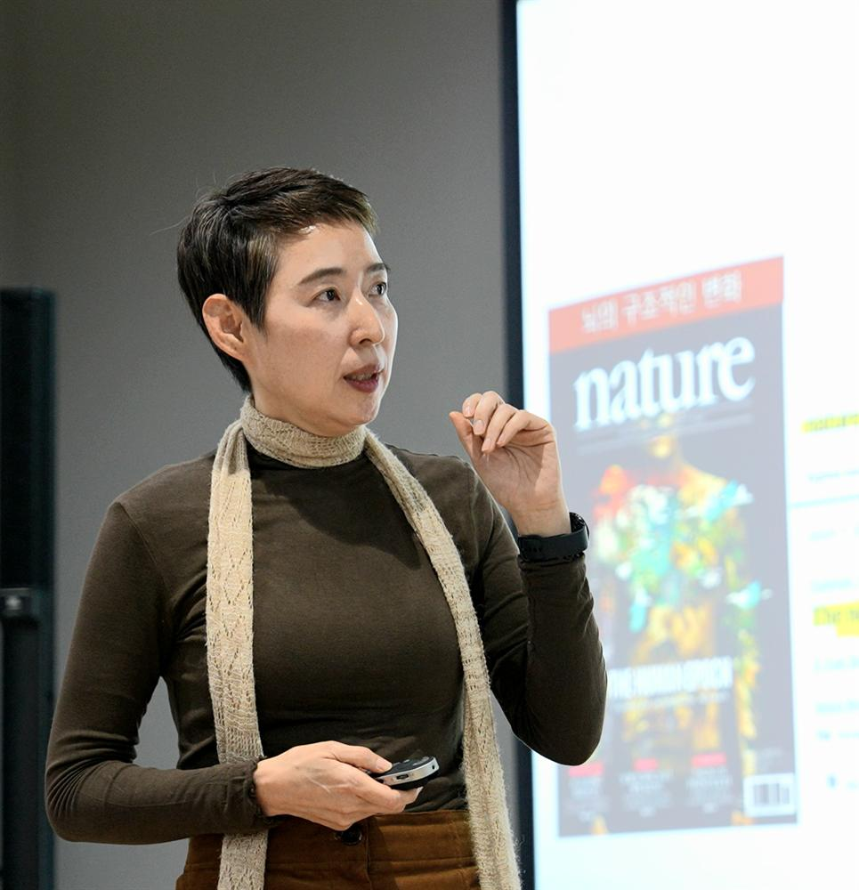
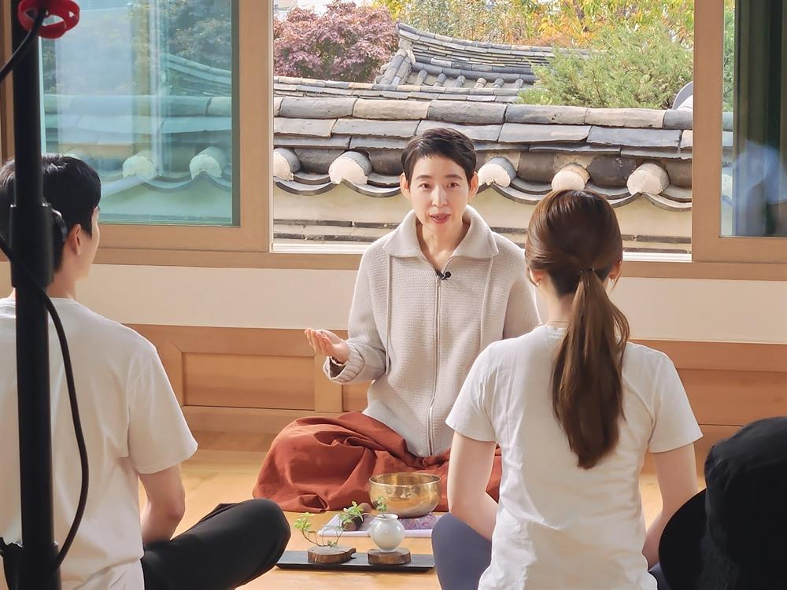
Mindful Business Solutions
조직의 문화와 구성원의 특성을 이해한 뒤, 목적에 맞는 프로그램을 맞춤 설계합니다.
01
Mindful Leadership Program
리더가 자신의 내적 상태와 관계적 영향력을 알아차리고, 압박과 불확실성 속에서도 더 명료하고 인간적인 선택을 하도록 돕습니다.
CEO, 임원, 팀장 등 조직의 리더를 대상으로 마음챙김, 컴패션, 성찰적 대화와 코칭을 결합한 맞춤형 프로그램을 설계하고 진행합니다.
주요 주제
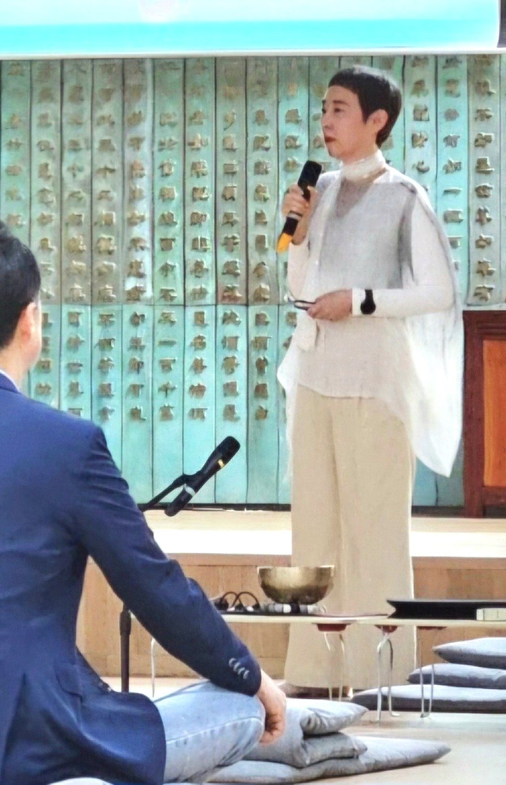
02
Mindfulness & Compassion Program for Organizations
조직 구성원이 지속적인 업무 압박 속에서도 자신의 상태를 돌보고, 집중력과 회복력, 관계의 질을 유지하도록 돕습니다.
단순한 휴식에 머무르지 않고, 교육에서 배운 알아차림과 회복의 기술을 실제 업무와 관계 속에서 사용할 수 있도록 구성합니다.
주요 주제
03
Executive Mindfulness Coaching
책임과 의사결정의 무게를 감당하는 리더가 자신의 내적 상태를 성찰하고, 감정적 반응에서 벗어나 더 명료한 관점과 행동을 선택하도록 돕습니다.
철저한 비밀보장을 기반으로 명상과 코칭을 결합하여 리더의 자기인식, 정서조절, 관계적 영향력과 의사결정 과정을 탐색합니다. 코치는 답을 대신 제시하기보다, 리더가 자신의 내면에 성찰 기능을 키우도록 성찰파트너로 함께합니다.
주요 주제
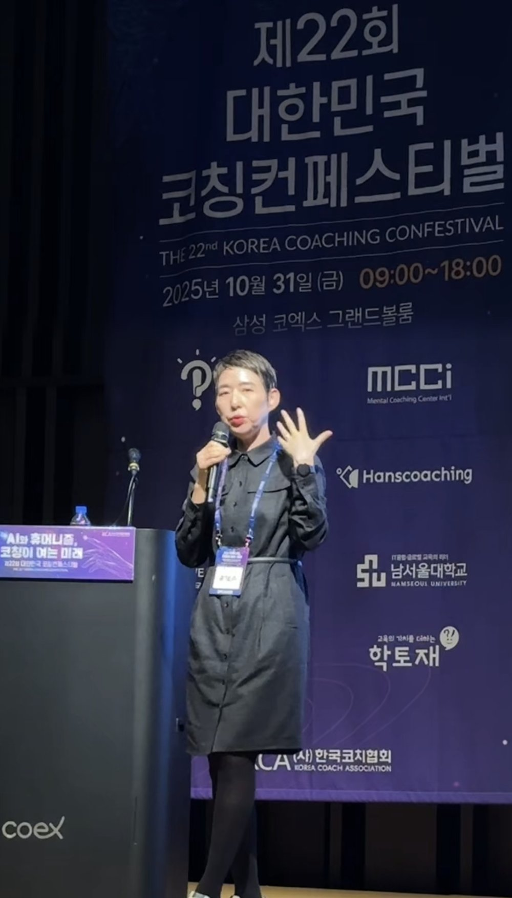
04
Korean Mindfulness-Based Stress Reduction
상담·코칭·교육 현장에서 마음챙김을 깊이 있게 활용하고 싶은 전문가와, 자신의 마음챙김 기반을 체계적으로 다지고 싶은 분들을 위한 공개 과정입니다.
온라인 6회(Zoom)와 대면 집중수련 1회(서울)로 구성된 7회기 과정으로, 마음챙김 명상의 체계와 기본기를 순서대로 익힙니다.
7회기 커리큘럼
Voices
실제 프로그램에 참여한 리더와 구성원들이 남긴 86개의 이야기입니다. 나를 보다 → 마음을 다스리다 → 더 명료하게 선택하다 → 사람을 다르게 만나다 → 조직으로 확장하다 → 다시 연습하며 삶과 일에 이어가다.
★ 대표 후기
모든 건 자기인식에서 출발한다는 단순한 명제를 다시 깨닫는 소중한 기회가 됨.
★ 대표 후기
감정과 나를 분리하여 생각하여 감정이 내가 되는것을 막을 수 있을것 같습니다.
★ 대표 후기
감정이나 생각을 자각하고 한 발 떨어져서 객관적이고 합리적인 결정을 할 수 있겠다.
★ 대표 후기
동료나 팀원들과 소통할때 내 마음을 다스려가면서 원활한 대화를 나눌수 있을것같습니다.
★ 대표 후기
리더의 심리적 안정감과 평정심은 조직원에게 반드시, 쉽게 전파됩니다. 그 반대는 더 빠르죠. 그렇기에 리더군에 대한 심리 개선 프로그램은 꼭 필요합니다.
★ 대표 후기
이전 오프라인 교육 이후 바쁜 일상에 잊었던 내용들을 다시한번 생각할수 있어서 좋았음.
★ 대표 후기
타인과 외부요인에 대한 깊은 주의에 익숙한 우리들이 나 자신으로 주의 방향을 틀어보는 계기가 되고, 이를 통해 나 스스로의 상태를 알아차리고 이해하며, 미래 행동과 심리적 방향성을 세울 수 있다고 생각하기에 추천합니다.
★ 대표 후기
감정은 내가 아니다. 인지하는거다.
★ 대표 후기
스트레스나 복잡한 상황 발생시 성급하지 않게 판단할 수 있을것 같습니다.
★ 대표 후기
면담 중 들이쉬는 호흡으로 경청 실행.
★ 대표 후기
결국 나를 잘 다스려야 내가 이끄는 조직도 잘 나아갈수 있음.
★ 대표 후기
하루 내적상태를 선택하는 인싸이트.
★ 대표 후기
본인을 더 잘 알아가는 교육이었고, 다른 교육들은 지식이나 방법 등을 배우는 교육이었으면 이번 교육은 멈춰서 비울 줄 알게되는 교육이었습니다.
★ 대표 후기
다른 사람 감정 살피기에 급급했지, 내 마음을 다스리는 방법을 몰랐습니다. 이번 교육을 통해 내 감정을 다스림으로 일과 조직, 가족과 더 원활한 관계를 맺을 수 있는 인사이트를 얻은거 같습니다.
★ 대표 후기
명료한 의식으로 정확한 의사결정 수행.
★ 대표 후기
자신을 돌아보고 이해하여 동료를 생각하는 마음가짐의 변화를 줄 수 있다.
★ 대표 후기
리더의 심리 안정감을 증진시켜 리더십 발휘는 물론 조직 운영에도 매우 긍정적인 영향을 미칠 것으로 기대함.
★ 대표 후기
일회성에 끝나지 않고 지속 이어지는 프로그램에 많은 효과를 느꼈습니다. 감사합니다.
자기를 떨어져서 객관화 시각으로 볼 수 있는 것. 자기를 그대로 바라보고 성찰할수 있음.
감정을 나와 동일시 하지 않고 바라보고 선택하라는 이야기.
리더들이 업무를 함에 있어서 잠깐의 마음챙김을 통해 평정심 유지 및 바른판단에 도움될 듯.
리더의 마음에 여유가 팀원과의 소통과 공감에 큰 도움이 되고 조직문화 개선 및 성과 개선에 큰 도움이 됩니다.
리더가 평온해야 조직원들을 제대로 코칭하고 소통할 수 있으므로 후임 팀장들에게도 추천해 주고 싶다.
원데이 수업 내용을 다시한번 상기. 마음챙김을 실천하는데 지속적인 자극이 되어 줘서 좋음.
평상시 소외된 나에 대해 자각하지 못했는데, 의식적으로 감각을 매개체로 나에게 집중함으로써 중심을 잡는 방법을 알게되었음.
팀장생활이 다년차가 되면서 느끼는 감정의 상처를 인지하고 견디는 힘.
복잡하고 다양한 업무속에서 명확하고 올바른 의사결정.
팀원과 의견 차이가 있을 때, 대화 하면서 마음챙김을 통해 좀 더 원만한 대화를 이어갈 수 있을것 같다.
자신의 마음챙김이 되어야 조직이 강건해질것. 적극 확대 추천합니다.
앞으로도 이런 시간을 통해 잊었던 명상의 감각을 지속 유지했으면합니다.
나 자신을 돌아보고 성찰할 수 있는 방법론적인 강의가 좋았다.
업무만 하다보니 내 감정에 많이 휘둘리면서 살아갑니다. 짧은 하루였지만 잠깐 그 감정을 돌아보고 살아가는 힘을 얻을 수 있는 시간이었습니다.
단순 회복이 아닌 궁극적으로 집중력을 키우고, 효율적인 업무까지 할수있다는 점이 인상적이었음.
개인의 마음챙김이 주변 관계에도 좋은 영향을 미침을 배웠습니다.
단순히 개인의 쉼과 회복뿐만 아니라 리더십을 강화할 수 있는 강의로 리더뿐만 아니라 리더로의 성장 가능성이 있는 구성원까지 확대해서 참여할 수 있으면 좋겠습니다.
어렵지 않음에도 혼자 하기 힘든 일이기 때문에.
평소에 지나치고 못 느꼈던 감각을 일깨우고, 자신에게 집중하는 것이 필요하다는 점이 가장 남습니다.
감정을 분리하고 타자화하는 방식, 호흡과 관조를 통해 평정심을 찾는 법.
감정에 치우친 소통 혹은 판단 지양.
팀원들과의 공감대 형성에… 나의 고집이나 아집을 버릴수 있을듯.
리더로서 자기인식에 대한 중요성을 알게됨. 마음챙김을 통해 리더십 향상에 도움을 줄 수 있음.
업무시작전 일상에서도 명상과 집중을 할수 있는 습관을 배울수 있는것 같아요.
자신을 되돌아보고 안정을 찾을 수 있는 명상의 방법을 직접 해보면서 느끼는 부분이 좋았습니다.
잠시 내려놓고 나와 내 감정을 분리하는 느낌.
생각 감정 감성을 분리하여 어떤 결정을할때 더욱 신중해질것같습니다.
심리적 안정감을 바탕으로 팀원을 좀더 여유롭게 대할 수 있을 것 같다.
마음의 건강이 조직문화를 바꿈.
마음을 가라앉히고 업무에 몰입할 수 있도록 도와줌.
상황과 자신, 감정과 자신을 분리하여 오롯이 이루고자 하는 것, 원래의 자신에 집중하는 것이 필요하다는 것을 인식하게 됨.
감각에 둔감해지며 감정을 소모하거나 표출하는 일이 잦았는데, 감각에 예민해지는 경험을 통해 이를 완화시킬 수 있다는 점이 인상깊었습니다.
평상심을 갖고 의사결정을 할 수 있을듯합니다.
마음챙김 통해 감정에 치우침을 줄이고 소통 강화에 활용.
금번 교육을 통해 팀장들의 마음챙김 등을 지원해주심에 감사드리며 이것이 회사의 성과로 연결되리라 확신합니다.
일상 업무를 대하는 나의 마음을 알아차림을 통해 준비를 할 수 있어 좋았습니다.
몸과 마음의 상태가 다르다는 것을 알게해준 명상의 시간과 안정적으로 인식하고 느낄수 있던 실습.
감정 밑에 깔린 욕구와 생각 파악하기. 자기 감정 인지와 감정 다스리기.
감정 아닌 평정심에서의 객관적 판단.
팀원들과 소통을 잘하게되어 팀웍 향상에 도움이 될거 같음.
조직 리더로서 평정심을 갖고 구성원을 대하는 것이 성과에 큰 영향을 줄거라 생각합니다.
정신없이 시작했던 아침을 편안하고 안정된 마음으로 시작하면서 일의 우선순위 집중할 항목들이 명료해졌다.
자신의 생각에 대해 돌아보고, 자신의 몸에 대해 인지하게 되는 좋은 시간.
화를 다스리는법, 잠시 멈춤!!
중요한 결정에서 선택과 집중에 도움될것 같음.
서로 감정적이며 즉흥적인 소통을 지양하는데 도움이 될것 같습니다.
리더의 감정 컨트롤로 조직 전체의 분위기와 효율 향상.
아침 명상으로 하루를 미리 예습해보는 시간이었습니다.
복잡하고 스트레스 받는 근무환경 속에서 잠시 한발 물러서서 마음을 챙기고 돌아보며 스트레스를 관리하는 방법을 터득하는 기회라 좋았습니다.
스트레스를 받을때 호흡법으로 조절 가능할것 같습니다.
평정심을 유지하며 정확한 판단력.
팀원들을 대할때 더 경청하는 모습과 여유를 가질수 있을것 같습니다.
조직 문화 향상에도 큰 도움이 될것으로 생각됩니다. 성과가 좋거나 반대로 조직 문화가 저조한 팀단위로 진행하면 조직문화, 성과에 큰 도움이 될꺼 같습니다.
호흡명상과 하루업무 계획연계 사전 시뮬레이션 및 감정 체크 내용.
잠시나마 자신의 감각을 통해 마음을 볼 수 있는 소중한 시간이었습니다.
긴장되는 순간, 화가나는 순간에 평정심 유지 및 안정감.
감정에 휘둘리지 않는 판단.
자기를 돌아봄으로써 조직구성원과의 화합에 큰 도움이 될 듯 합니다.
리더의 심적안정감 회복이 구성원과의 소통 시 영향을 미칠 것을 기대함.
하루를 리뷰해보는 명상. 스스로 잠시 멈춤을 실행할 수 있음.
바쁘고 벅찬 일상에서 벗어나 좋은 환경에서 나의 상태를 인지하고 인정함으로써 나에 대한 사랑과 회복방법을 깨닫게 된 것이 너무 큰 수확인 것 같습니다.
본인의 감정상태를 자각하는 법. 마음가짐을 다스릴수 있는 좋은 과정입니다.
좀 더 이성적인 판단으로 리딩하는 능력향상 기대.
강력 추천, 나를 돌아보고 마음을 진정시켜, 나의 발전과 동료와의 협업에 긍정적인 효과를 기대.
리더가 리더스스로를 인정하고 감정조절을 잘 컨트롤 하는 상황에서 소통하면 긍정적 효과 기대.
호흡하면서 몸이 릴렉스되면 긴장 완화, 정신이 맑아짐. 업무시작전 정신이 맑아짐.
아침 출근때 복잡한 마음이 정리된 느낌입니다. 그리고 아침에 참여하는 것이 번거롭게 느껴졌던것도 사실이지만 막상 참여하니 하길 잘했다는 생각이 듭니다. 다음에도 참여하고싶습니다.
오늘의 일과를 정리하는것이었습니다. 짧은 시간이라도 이렇게 정리하는게 하루를 시작하는데 큰 도움이 되는것 같습니다.
Archive · 2016 ~ 현재
강의실과 리트릿, 온라인 스튜디오와 숲길까지 — 현장에서 쌓아온 시간들입니다.
Partnership
기업과 기관의 특성에 맞는 마음챙김·컴패션 프로그램을 함께 설계합니다.
리더십 개발, 임직원 마음건강, 번아웃 예방과 내면역량 향상을 위한 명상교육·명상코칭·그룹 프로그램을 기획하고 운영합니다.
일회성 강연부터 지속형 교육과 코칭까지, 대상과 목적, 현장의 필요를 충분히 이해한 뒤 적합한 프로그램을 제안드립니다.
남겨주신 연락처로 영업일 기준 2일 이내에 회신드립니다.